Making a map with tiled.
Hello. Today we are making a map for use with the Fey Brewster javascript game engine. Let's dive right in.
Download the project files
Start by visiting this Github Link to get the latest version of the project files. Extract the folder to your working directory. Then, open the Tiled application.
Open the project file
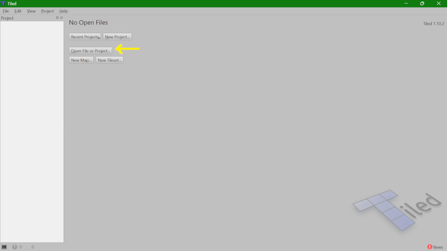Begin by selecting the Open File or Project button. Use the pop-up window to navigate to the feyBrewster directory and locate the file feyBrewster.tiled-project.
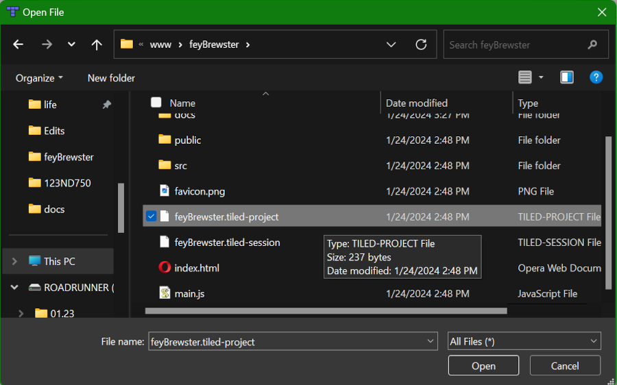If you don't see anything you may need to go to the View dropdown menu, select Views and Toolbars and ensure that the projects box is checked.
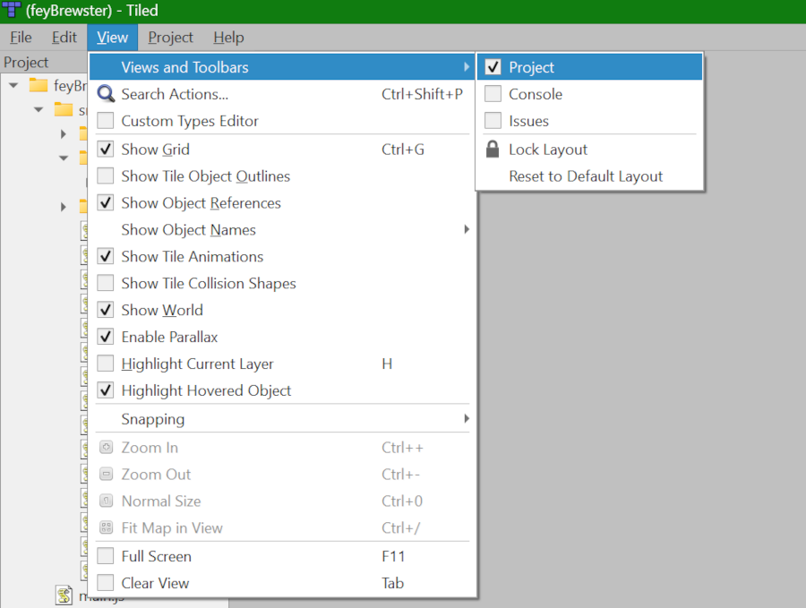The levels are located and stored in the src folder. To start a new level select the New Map button. Set the map size to 16 by 16 and the tile size to 32 by 32 pixels.
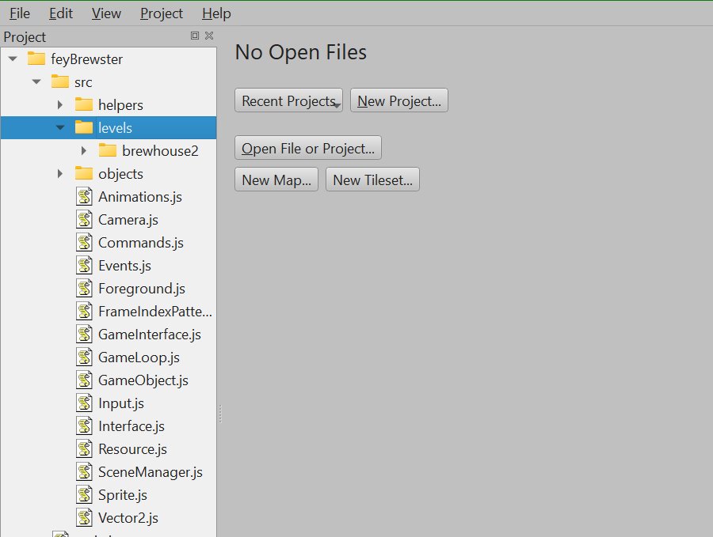 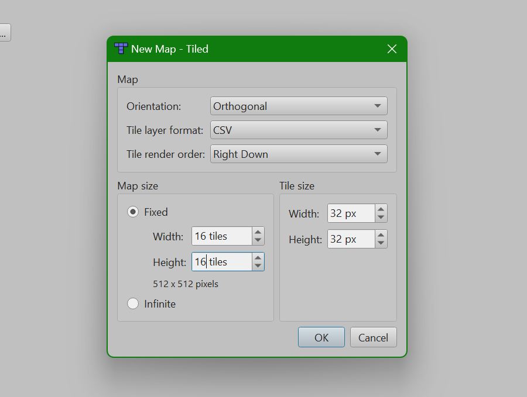Save the file. In the save window navigate to the levels folder and create a new directory, name it after the region you are creating. Enter that directory and save the first chunk. I label the chunks with their position such as 0_0, 1_0, 2_0, etc. but any name will work.
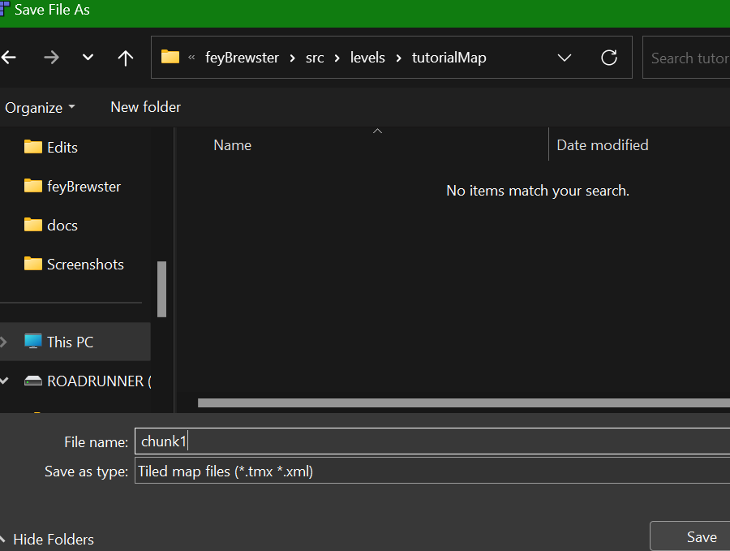Make the Chunk layers
The game engine has been hard coded to use 7 seperate Tiled layers to make up a chunk. The chunk must have all 7 layers in the correct order to properly render. There is a default chunk in the levels folder that can be copied to avoid setting up the chunk each time. More layers can be added without too much trouble but we should decide on that before going too far into making maps. 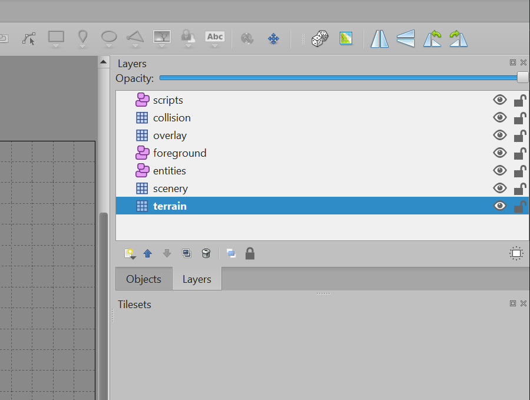- Terrain - Tiles Layer (this layer is the base map).
- Scenery - Tiles Layer (a layer for ground clutter, buildings and such).
- Entities - Object Layer (equipment, creatures, things that the player will interact with).
- Foreground - Object Layer (the player is added to this layer with the use of spawnLocation, doors, stairs, etc).
- Overlay - Tiles Layer (trees, building that the player can walk behing, anything displayed over the char and is part of the map).
- Collision - Tiles Layer (this layer is for drawing the walls of the map that contain the player in the world. I use a red tile to fill in all of the barriers on this layer. A special collider tile is added to the map for the tiles on this layer and the display of them can be toggled on or off).
- Scripts - Object Layer (I haven't implimentd this feature yet but this layer will be for adding things like zones, spawners, or events that need to be triggered by the map).
Tilesets
The Fey Brewster engine maps currently have support for one tileset. It can be any size, though something to consider is that if the tileset image width is resized after making a map it will alter the indexing for the frames. The map will need to be re-created. Extending the height will work as long as the existing tiles positions are not altered. The spritesheet is divided into a grid and each tile is numbered starting from one and increasing as you go left to right and top down.
We are using tiles 32px square. A typical tileset is 16 tiles wide and 16 tiles high. The resulting file is 512px square and contains 256 tiles referenced by the code using this array which corresponds to the tiles location on the image. As you can see, extending the image down would not alter the mapping of existing frames in the tileset.
[1,2,3,4,5,6,7,8,9,10,11,12,13,14,15,16,17,18,19,20,21,22,23,24,25,26,27,28,29,30,31,32,
33,34,35,36,37,38,39,40,41,42,43,44,45,46,47,48,
49,50,51,52,53,54,55,56,57,58,59,60,61,62,63,64,
65,66,67,68,69,70,71,72,73,74,75,76,77,78,79,80,
81,82,83,84,85,86,87,88,89,90,91,92,93,94,95,96,
97,98,99,100,101,102,103,104,105,106,107,108,109,110,111,112,
113,114,115,116,117,118,119,120,121,122,123,124,125,126,127,128,
129,130,131,132,133,134,135,136,137,138,139,140,141,142,143,144,
145,146, 147,148,149,150,151,152,153,154,155,156,157,158,159,160,
161,162,163,164,165,166,167,168,169,170,171,172,173,174,175,176,
177,178,179,180,181,182,183,184,185,186,187,188,189,190,191,192,
193,194,195,196,197,198,199,200,201,202,203,204,205,206,207,208,
209,210,211,212,213,214,215,216,217,218,219,220,221,222,223,224,
225,226,227,228,229,230,231,232,233,234,235,236,237,238,239,240,
241,242,243,244,245,246,247,248,249,250,251,252,253,254,255,256]
Organizing Sprites
When making game sprites include the terrain and scenery onto one spritesheet. Creatures and equipment and objects that can be interacted with will use individual spritesheets.
Here is the inside of the WoodFermenter.js script. It has a custom size and a unique image file. Other custom properties and behaviors can be set to the wood fermenter during development.

The wood fermenter will be added to the map on the entities layer.
Add a new tileset...
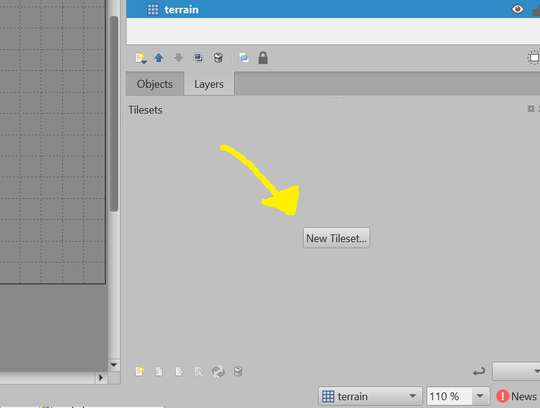In the pop-up window navigate to project folder public/sprites and find a tilesheet to use. If you don't want to use one that already exists then this is the folder to add your own spritesheet to. Image files must be registered manually to the Resource.js file to be used in the game.
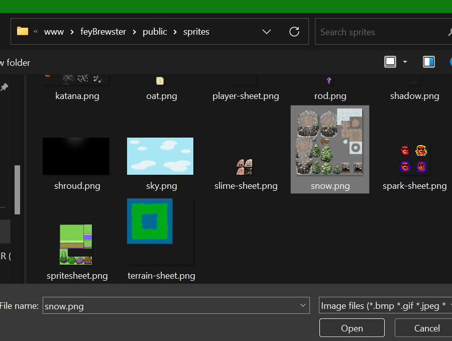The tileset name should be camelCase and match the corresponding registry in the Resource.js file. The filenames are typically hyphenated and the in game registry is in camelCase. Save the tileset .tsx file in the same directory as the map you are making.
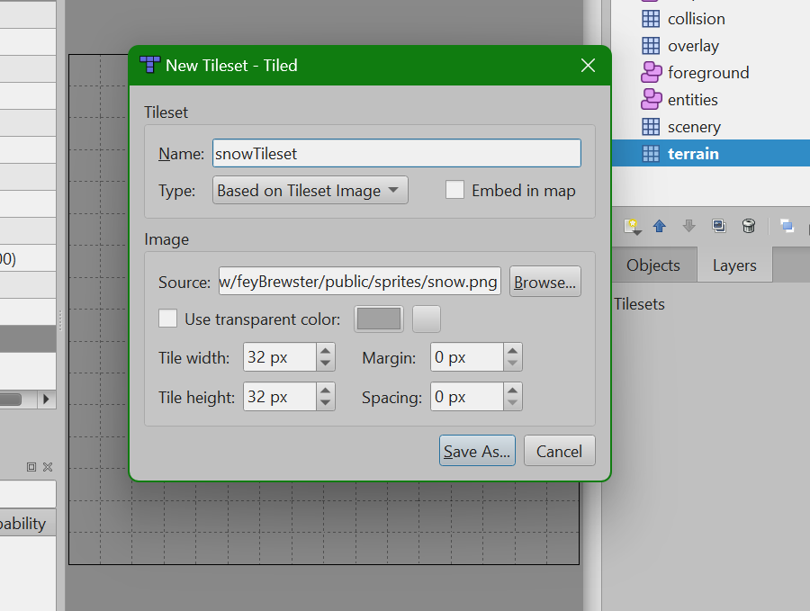 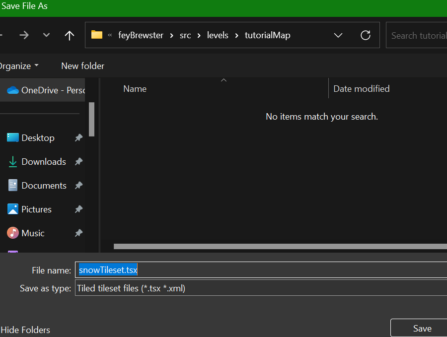I opened the Resource.js file and edited it in notepad++ to include the snow.png file that I added to the public/sprites directory. The Resource.js file will be uploaded to the server along with the new map directory and the sprite image.
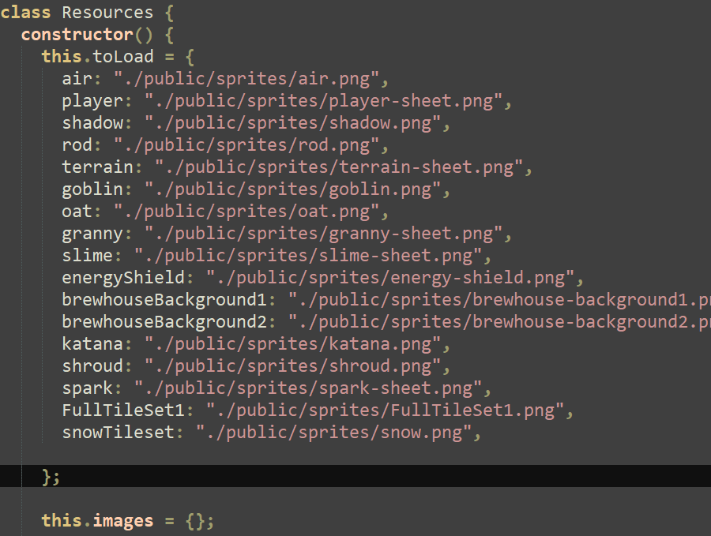
Terrain Layer
The base layer consisting of the ground, floor, substrate...surface...background...
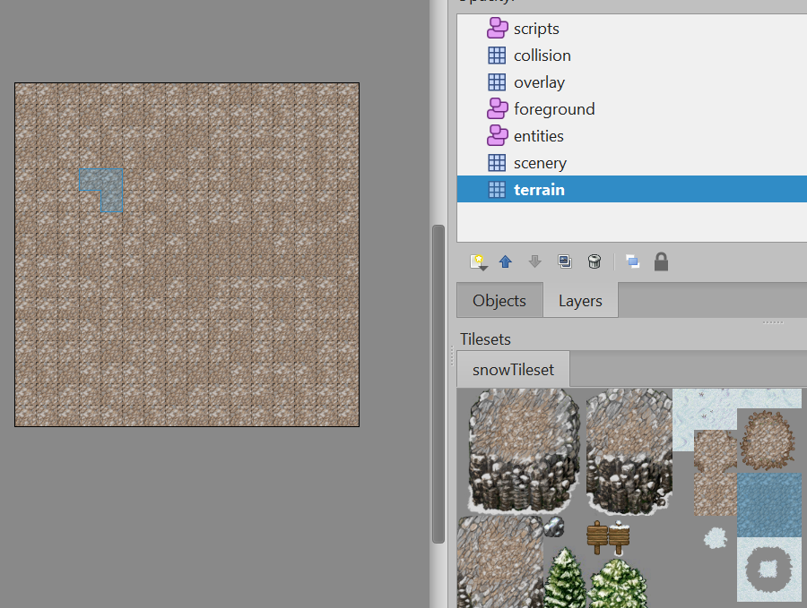Scenery
The trees and stuff that goes over the base layer but beneath or blocked off to the player and entities. 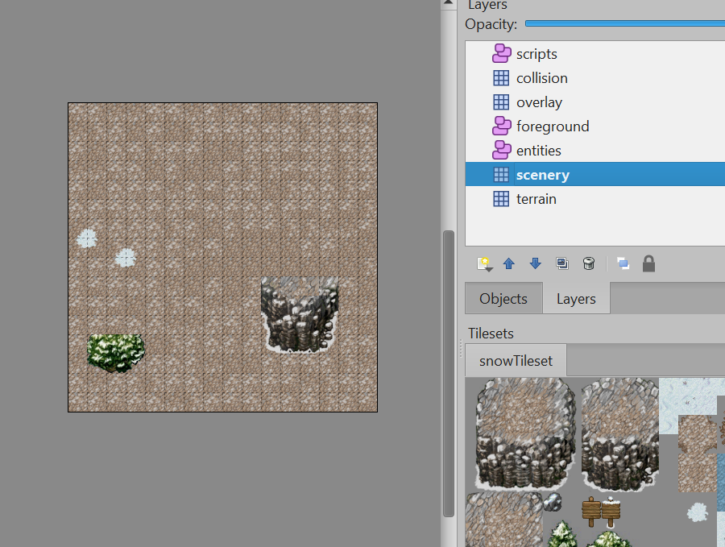
Entities
Adding the wood fermenter to the entities layer is as easy as pie. Make a new rectangle object and name it for the entity you want to place.
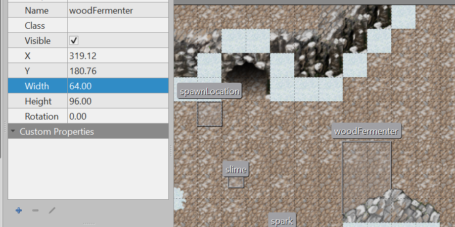 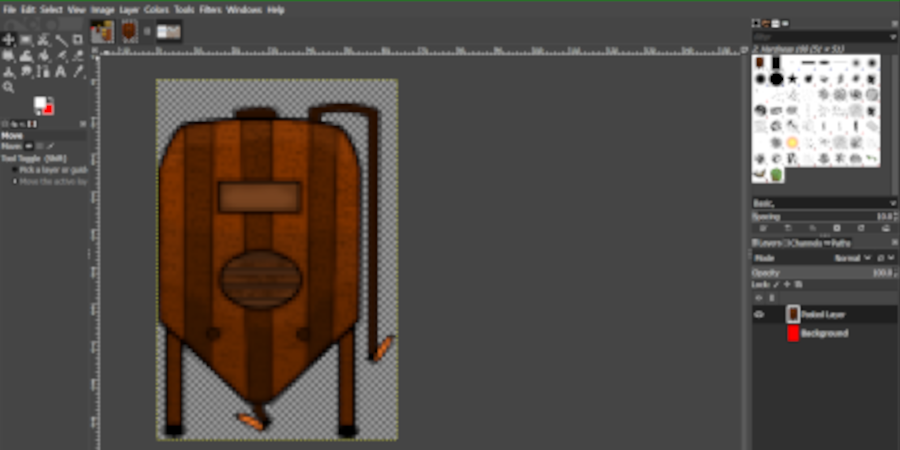Foreground
I add a rectangle object and name it spawnLocation. I add a custom property named spawnLocation with the value tutorialMap (which must match the name of the directory). I will also update the main.js to load the new map because there is no other way at the moment to load worlds.
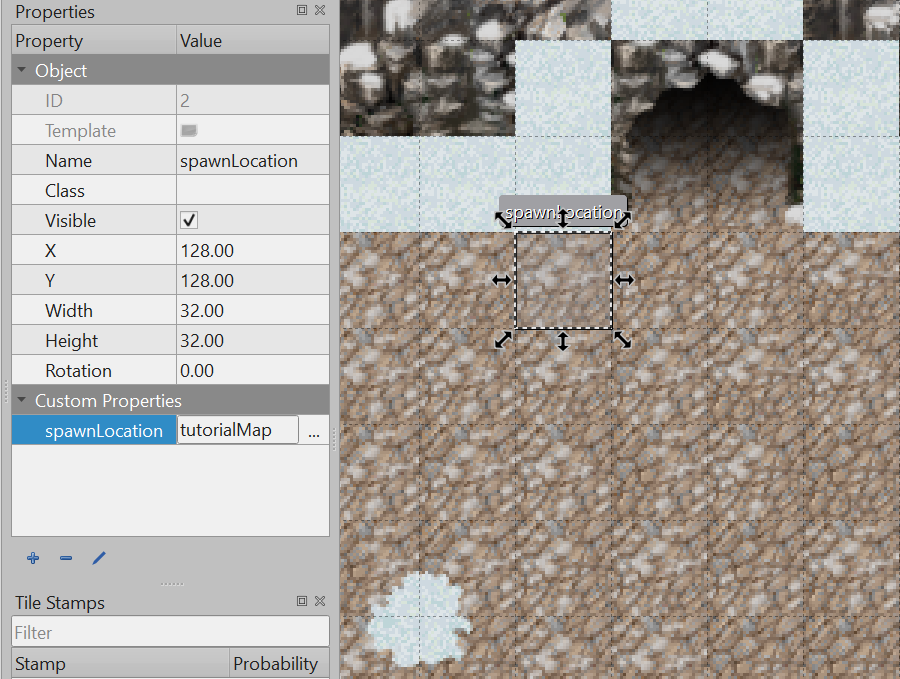Overlay
This layer is drawn after the player and appears above it on the screen. Used for signs, trees and buildings the player is able to walk behind. 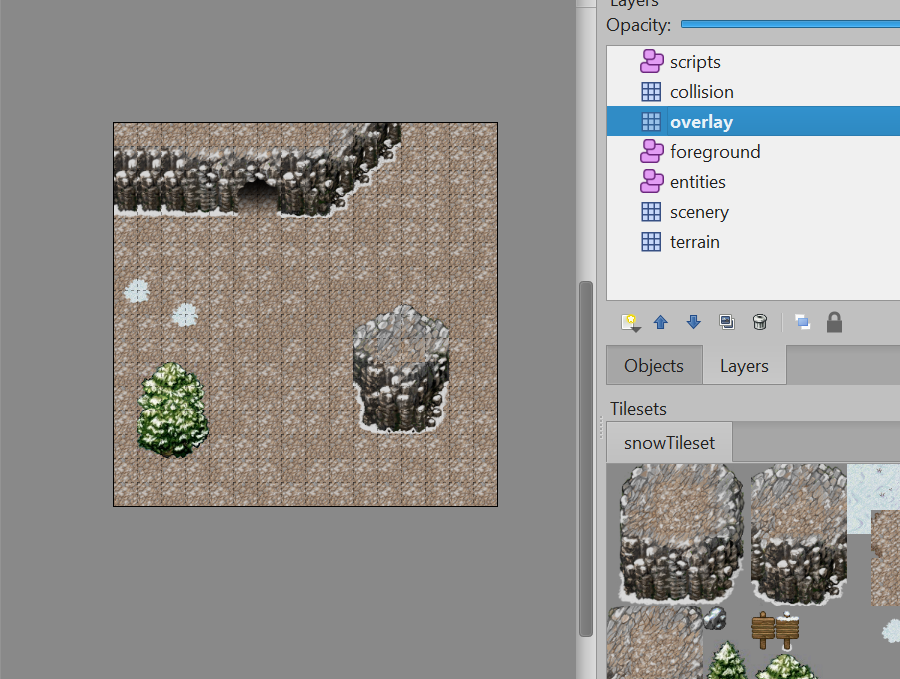
Collision
Right now any tile you draw on here will be read as a barrier block. I like to use a red block with transparency set but I didn't feel like editing this tileset so I am using a snow tile to mark out the wall tiles. It won't be visible on the game screen.
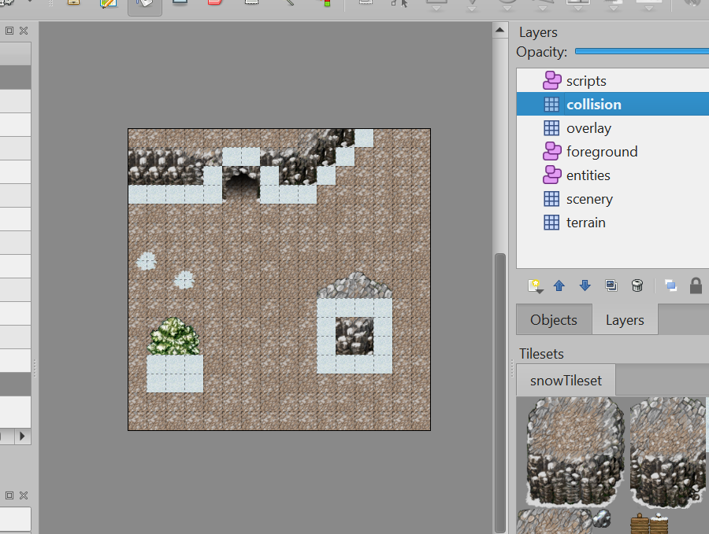Scripts
We will be able to call scripts and create zones on this layer.
Save the file
Save the file. Then export as json map files.
Make a world file
Just one chunk is not enough. We must add more chunks. To do so we need to make a world file (named world.world). On the menu go to World and select New World. Then select the world tool (N).
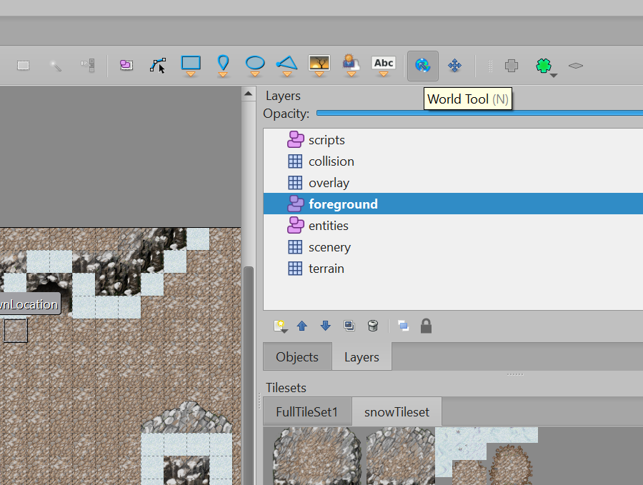Add the chunk to the world (Shift+A)
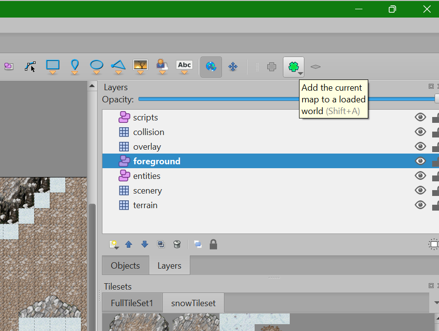Save the world
On the menu go to World and Save World then save the world.
Upload files to server
From here you can continue making new maps for each chunk and adding them to the world. When the world is ready the updates are made to the server with the new directory, the spritesheet, the Resource.js asset loader, and the main.js.